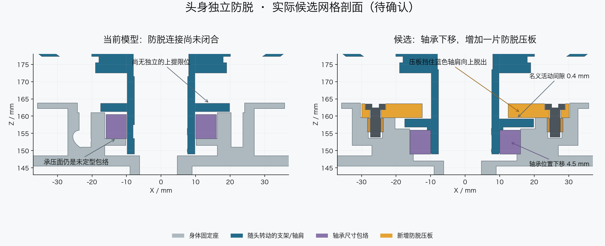

A5已采用 · 当前主模型 M1.44头身独立防脱已应用到主模型
当前主模型与最终检查 · 更新后的完整装配动画
可以在舵盘资料到齐前完成这部分设计。候选用一片平板式压板，挡住头部转动座下方的轴肩；正常转动留间隙。需要把Yaw轴承及配套限位下移4.5mm，头壳、屏幕和舵机保持原位。

■蓝：随头转动■灰：身体固定■黄：新增压板■紫：轴承包络

增加：1件PA12打印件＋2枚M3×8螺钉＋2个M3嵌件。原Yaw承重桥和转动支架各做局部调整。螺钉头沉入压板，顶面在原遮缝圈以内；不是拧紧后夹死旋转部分。
| 检查 | 结果与范围 |
|---|
| 头部运动 | 130个组合姿态，名义实体无新增碰撞 |
| 装入和螺钉操作 | 压板侧装/组合下落通过；Yaw手动转到+60°、俯仰总成尚未装入时，可操作两枚螺钉 |
| 防脱 | 名义间隙0.4mm；保存文件回读，13个Yaw角在上提0.41mm时均被阻挡 |
| 机械限位 | 采样接触仍约±64.25°，正常范围±60° |
| 身体原装配顺序 | 407个位置及桥脚工具路径重新检查通过 |
轴承参考NSK6804ZZ官方尺寸（20×32×7mm）。完整内部CAD、采购价格和实物配合没有确认，轴颈及壳孔是PA12试配尺寸。
这不是头部传动整体完成。舵盘、中心螺钉、俯仰短轴及最终轴向叠层仍待厂家资料；0.4mm防脱间隙不是轴承预紧。完整走线、打印强度、嵌件抗拔、蠕变和实际运行仍未验证。
先在离机状态把压板套到Yaw支架上，再与支架一起下落到身体轴承座，旋转至工具可达姿态后固定压板，最后装俯仰头部。拆卸时先托住头部，再按相反顺序进行。
历史A5候选 Blender 完整说明 候选检查 保存文件回读 身体装配复查
PROTOTYPE / UNVALIDATED · 最终主模型的本接口名义几何检查通过 · 未生成制造或采购订单。